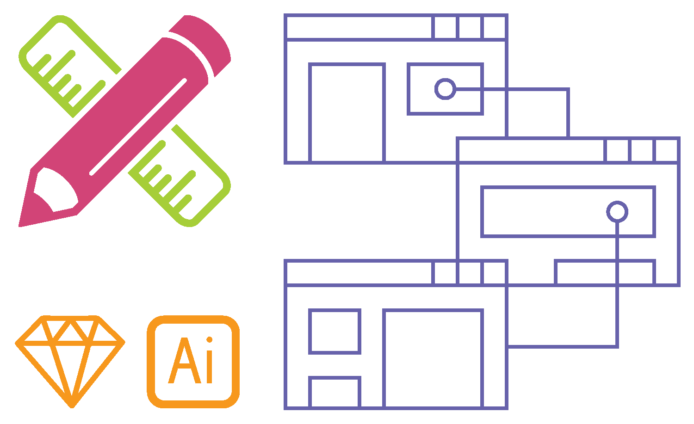
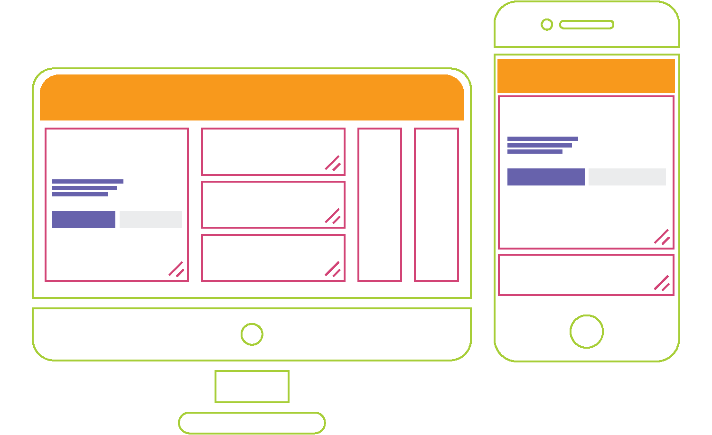

<div class = "resume-wrap">
  <div class = "resume" id = "resume">
      <div class = "bio">
        <h1 class = "section-header">About</h1>
        <div class = "bio-left">
          <p><span class = "bio-key">Who am I?</span> I'm a systems thinker and designer, currently working at Reva Technology designing product and user experience for the multi-family real estate space. I've got over 9 years of experience designing for domains like enterprise, security, non-profit, learning, e-commerce and lifestyle.</p>
          <p><span class = "bio-key">What drives me?</span> What I love most about design is the myriad opportunities to break bad status-quos - systems that are stuck in a rut because <em>that</em> was how they were always designed. I believe that the best way to grok a problem domain is to design for it.</p>
          <p><span class = "bio-key">What else do I love?</span> Music and cooking are both important creative outlets for me. I'm a carnatic, jazz, blues, and rock vocalist and have over 8 years of performing experience. Homely vegetarian food is my culinary specialty.</p>
        </div>
        <div class = "bio-right">
          <div class = "availability">
            <p><span class = "bio-key">Availability</span><br />
            I am looking for full-time product design roles with a <strong>strong</strong> emphasis on roles which continue my growth as a systems thinker. If you have an idea for a collaboration, hit me up and we could this over a hot cup of my special chai!</p>
          </div>
          <a class = "resume-button primary-button" href ="{{ site.url }}/GaneshResume.pdf" target = "_blank"><i class="fa fa-file-pdf-o button-fa"></i> Print-friendly Resume</a>
          <a class = "resume-button secondary-button" href ="#contact">Let's Talk!</a>
        </div>
      </div>
      <div class = "skills">
        <p class = "bio-key">Skills and process</p>
        <div id = "skill-research" class = "skill">
          <div class = "skill-img">
            
          </div>
          <div class = "skill-text">
            <h2>Research</h2>
            <p>I use interviews, contextual inquiry, shadowing, brain/bodystorming,
              heuristic evaluation to inform my design and problem strategy. I also script and moderate usability tests and am a sharp note-taker during.
            </p>
          </div>
        </div>
        <div id = "skill-design" class = "skill">
          <div class = "skill-img">
            
          </div>
          <div class = "skill-text">
            <h2>Design + Prototyping</h2>
            <p>From paper sketches, I iteratively converge towards more refined solutions and use Sketch, Illustrator, Balsamiq or Figma for wireframes and creating UX specifications. To create prototypes, I use Proto/Invision, Marvel and Framer.
            </p>
          </div>
        </div>
        <div id = "skill-testing" class = "skill">
          <div class = "skill-img">
            
          </div>
          <div class = "skill-text">
            <h2>Visual + Development</h2>
            <p>I use Sketch and Zeplin to create Visual Design specifications. For development, I primarily work in HTML/Jade, CSS/SASS/SCSS, Javascript (jQuery, React, d3) and Python. I also have experience working with Unity, Arduino and Processing.
            </p>
          </div>
        </div>
      </div>
      <div class = "timeline">
        <p class = "bio-key">Experience</p>
        <section id="cd-timeline" class = "cd-container">
          <div class="cd-timeline-block">
            <div class="cd-timeline-img cd-work">
              <i class="fa fa-briefcase fa-2x"></i>
            </div>
            <div class="cd-timeline-content">
              <h2>Reva Technology</h2>
              <h3 class = "role">Senior Product Designer</h3>
              <p>I design and manage key infrastructural elements in Reva that pertain to communication templates, automation and productivity tools for leasing agents. </p>
              <span class="cd-date">May 2016 - <span class = "present">present</span></span>
            </div>
          </div>
          <div class="cd-timeline-block">
            <div class="cd-timeline-img cd-acad">
              <i class="fa fa-graduation-cap fa-2x"></i>
            </div>
            <div class="cd-timeline-content">
              
              <h2>University of California Berkeley (Masters)</h2>
              <h3 class = "role">Focus: Human-Computer Interaction, Data Visualization</h3>
              <p class = "gpa">GPA: 3.81/4</p>
              <p>I am currently in the final semester of my graduate studies in Human-Computer Interaction and Data Visualization at UC Berkeley's <a href = "https://www.ischool.berkeley.edu/" target="_blank">School of Information</a>.</p>
              <p>This program has helped me expand my horizons through working with diverse people in a compact yet intense incubator-esque environment. I've also designed for organizations like <a href = "https://blues.cs.berkeley.edu/" target="_blank">BLUES</a> and <a href = "https://vr.berkeley.edu/" target="_blank">Virtual Reality at Berkeley</a>.</p>
              <p>I graduated in May 2017.</p>
              <span class="cd-date">August 2015 - May 2017</span>
            </div>
          </div>
          <div class="cd-timeline-block">
            <div class="cd-timeline-img cd-work">
              <i class="fa fa-briefcase fa-2x"></i>
            </div>
            <div class="cd-timeline-content">
              <h2>Freelance</h2>
              <h3 class = "role">UX/UI Designer</h3>
              <p>I freelanced as a UX Designer for a year working for causes like
                spread of classical music (<a href = "https://www.bachinthesubways.org/" target="_blank">Bach in the Subways</a>) and women empowerment
                (<a href = "http://www.auroville.org/contents/3456" target = "_blank">WellPaper</a>). My roles varied from being a UX Designer to being a UX engineer as well
                as drafting social media strategy.</p>
              <span class="cd-date">May 2014 - August 2015</span>
            </div>
          </div>
          <div class="cd-timeline-block">
            <div class="cd-timeline-img cd-work">
              <i class="fa fa-briefcase fa-2x"></i>
            </div>
            <div class="cd-timeline-content">
              
              <h2>SAP Labs</h2>
              <h3 class = "role">UX Design Associate, SAP Business Suite UX</h3>
              <p>I worked as a User Experience Design Associate at SAP Labs based out of their Bangalore office. I worked with 2 product teams, helping ship primarily the HR Admin Dashboard and the SAP Business Suite product - Project Execution.</p>
              <span class="cd-date">November 2011 to April 2014</span>
            </div>
          </div>
          <div class="cd-timeline-block">
            <div class="cd-timeline-img cd-work">
              <i class="fa fa-briefcase fa-2x"></i>
            </div>
            <div class="cd-timeline-content">
              
              <h2>Infosys</h2>
              <h3 class = "role">User Interface Designer, Communication Design Group</h3>
              <p>After graduating, I started working full-time as a User Interface Designer for
              Infosys' Communication Design Group. During my time here, I designed for various
              problem spaces like social enterprise, supply-chain management, e-commerce, learning
              and lifestyle.</p>
              <span class="cd-date">June 2010 to October 2011</span>
            </div>
          </div>
          <div class="cd-timeline-block">
            <div class="cd-timeline-img cd-acad">
              <i class="fa fa-graduation-cap fa-2x"></i>
            </div>
            <div class="cd-timeline-content">
              
              <h2>IIT Guwahati (Bachelor of Design, B.Des)</h2>
              <h3 class = "role">Focus: Interaction Design, Usability</h3>
              <p class = "gpa">GPA: 8.6/10</p>
              <p>I graduated from the <a href = "http://www.iitg.ac.in/design/" target="_blank">Department of Design</a> at IIT Guwahati in May 2010.
                This was my introduction to the fundamentals of interaction design and usability
                as well as to Human-Computer Interaction.</p>
              <span class="cd-date">July 2006 to May 2010</span>
            </div>
          </div>
        </section>
      </div>

  </div>
</div>
